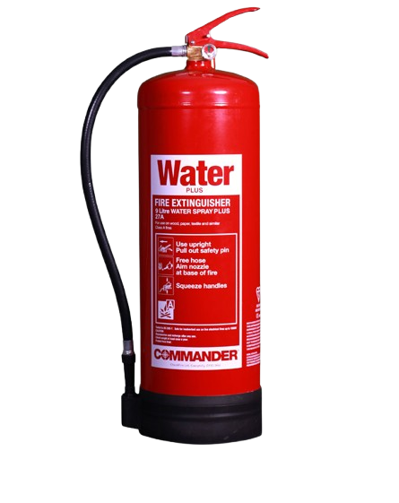
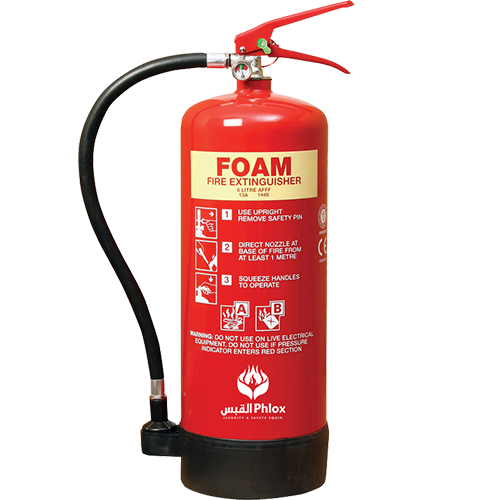
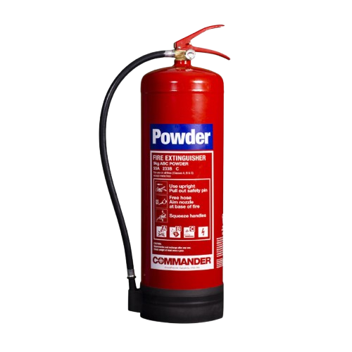
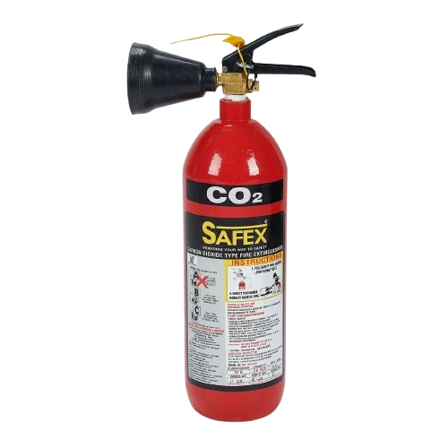
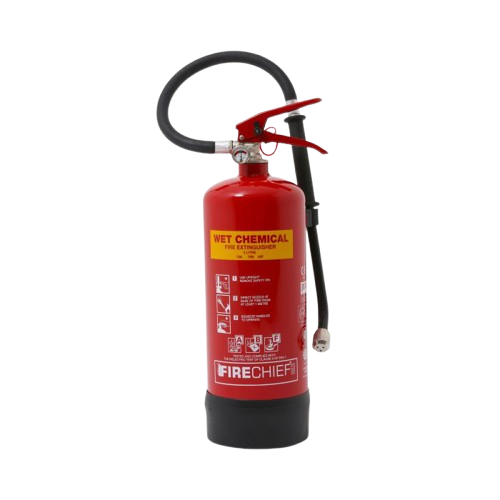

Water Extinguisher
Best for Class A fires (wood, paper, textiles). Not suitable for electrical or flammable liquid fires.

Foam Extinguisher
Effective on Class A and B fires (flammable liquids). Creates a blanket to smother flames.

Dry Powder Extinguisher
Multi purpose (A, B, C). Leaves residue and is not ideal for enclosed spaces or electronics.

Carbon Dioxide (CO₂) Extinguisher
Ideal for Class B and electrical fires. Leaves no residue, but has a limited range and cool down effect.

Wet Chemical Extinguisher
Designed for Class F fires (cooking oils and fats). Creates a cooling foam to prevent re flash.